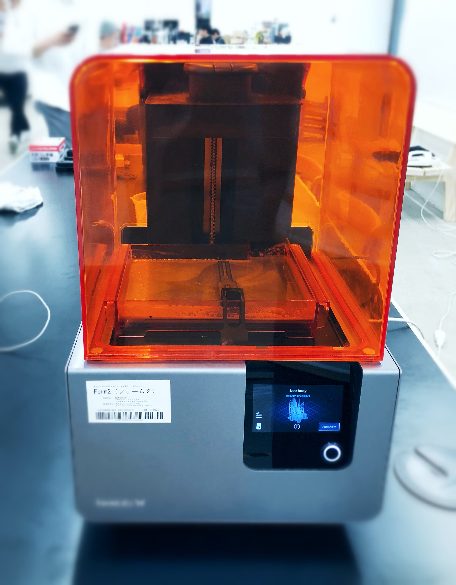
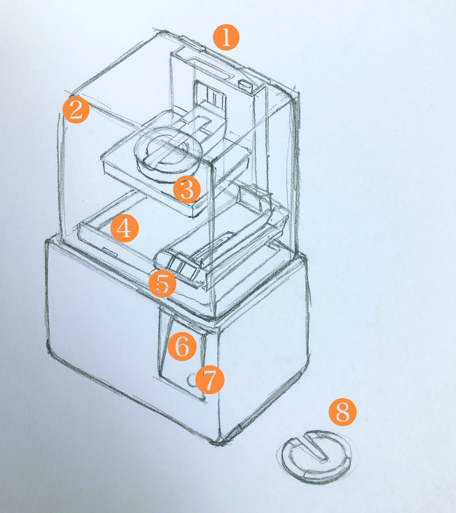

日本語では立体印刷機とも言う。
コンピュータ上で作った3Dデータを設計図として、その断面形状を付加加工で積層していくことで立体物を形成する。
今回の授業で取り扱った3DPrinterは、紫外線を照射することで硬化する液体樹脂を用いており「光造形法」とよばれる造形法式。
日本語では立体印刷機とも言う。
コンピュータ上で作った3Dデータを設計図として、その断面形状を付加加工で積層していくことで立体物を形成する。
今回の授業で取り扱った3DPrinterは、紫外線を照射することで硬化する液体樹脂を用いており「光造形法」とよばれる造形法式。
-----------------------------------------------------------------------------------------------------------------------------------------------------------------------------
＜About 3D Printer＞
＜授業で使用した3DPrinter: Formlabs Form 2 3D Printer＞

＜紹介動画：Formlabs Form 2 3D Printer＞
今回の授業で使用した3DCADソフトは [ Tinkercad ]
このソフトを使って、マイバッチを設計した。
＜3DCADで設計したバッジ＞
設計したマイバッチは Formlabsのソフトウェア
をPreFormに移動させて、サポート（土台）を生成し、それを使って角度を付ける。
プリント用のファイル（STLファイル）に変換する。
→ PreFormのダウンロードページ
＜サーポートをつけ加えたイメージ＞
→ STLに変換したファイルをSlackに送る（ex-material)
-----------------------------------------------------------------------------------------------------------------------------------------------------------------------------
＜制作過程：3D Printer＞
＜イメージ / パーツ説明：Formlabs Form 2 3D Printer＞

1.カートリッジ
2.カバー
3.ビルドプラットフォーム
4.レジンタンク
5.ワイパー
6.タッチスクリーン
7.ボタン
8.レベリングツール
---------------------------------------------------------------------------------------------------------------------------------------------------------------------
2. ＜Wi-Fiに接続する＞
Wi-Fiに接続する場合は、タッチスクリーン上に表示されているSettingsタブの中にある「Wi-Fi」をタッチ。
接続したいネットワーク名を選択。
3. ＜プリンターを水平にする(レジンが溢れ出ないようにするため)＞
⑧（レベリングツールで高さを調節。フラットにする。）
タッチスクリーンに表示されている円が中心に来るまで脚の高さを調節。
4. ＜樹脂タンクを装着する＞
(装着済み、樹脂は１ヶ月間ほど使い置きができるので何度か使い回しができる。)
5. ＜ビルドプラットフォームを装着する＞
6. ＜レジンカートリッジを装着する＞
電源を入れる前に、タンクの蓋を押して開けておき、レジンタンク内の規定量までレジンを注ぎ込めるようにする。
7. ＜ファイル確認＞
ファイルを選択し、プリントに間違いないことを確認したら、プリント開始。
(待ち時間３時間ほど...)
8. ＜ビルドプラットフォームを取り外す＞
その際、レジンがこぼれないようにプラットフォームを逆さにして、フィニッシュキットのところまで運ぶ。
その後、プリンタのカバーを忘れずに閉じます。(樹脂を紫外線から守るため。)
9. ＜プリントを洗浄する＞
（パーツを浸したIPAが絶え間なく撹拌し続け、その間にパーツに付いている余分なレジンを取り除き、洗浄時間が過ぎると、パーツを自動的にIPAから引き上げてくれる。）
樹脂洗浄機は１時間、乾燥機は10分ほど待つ。
（写真左：樹脂洗浄機 / 写真右：乾燥機)
10. ＜プリントを仕上げる＞
サポートを切り取った部分に残っている跡を消すために、サンドペーパーでパーツの表面を磨く。（今回は省略）
＜完成品!＞
動画挿入予定...
---------------------------------------------------------------------------------------------------------------------------------------------------------------------------
HOME PAGE